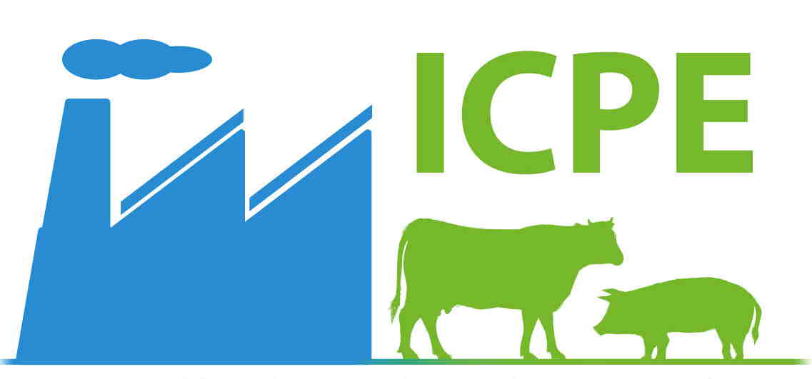
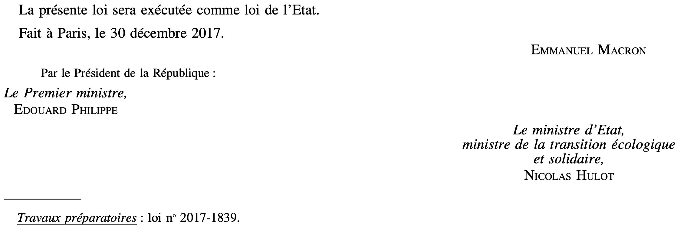

Accueil
Cours
Videos
À propos
Retour
QCM précédent
QCM suivant
QCM : Le Droit Minier - Auto-évaluation
Que dit le Code Minier ?
1. Que signifie l'acronyme ICPE ?

×
A) Implantations des Carrières et Petites Exploitations
B) Installations Classées pour la Protection de l'Eau
C) Installations Contrôlées pour la Protection de l'Environnement
D) Inspections des Carrières pour la Préservation de l'Environnement
Commentaire:
La bonne réponse est "Installations Classées pour la Protection de l'Environnement". Ces installations sont soumises à des réglementations strictes pour limiter leur impact sur l'environnement.
2. Les mines sont-elles soumises au régime des ICPE ?
A) Non, les mines relèvent principalement du Code Minier
B) Oui, les mines sont exclusivement régies par les ICPE
C) Non, les mines ne sont soumises à aucune réglementation spécifique
D) Oui, uniquement si elles exploitent des substances énergétiques
Commentaire:
La bonne réponse est "Non, les mines relèvent principalement du Code Minier". Cependant, certaines installations annexes à une mine peuvent relever des ICPE.
3. Les carrières sont-elles considérées comme des ICPE ?
A) Non, elles sont uniquement régies par le Code Minier
B) Oui, mais uniquement si elles produisent des métaux précieux
C) Non, elles ne sont soumises à aucune réglementation spécifique
D) Oui, elles sont souvent classées comme ICPE
Commentaire:
La bonne réponse est "Oui, elles sont souvent classées comme ICPE" en raison de leur impact environnemental. Elles relèvent de la rubrique 2510 de la nomenclature des ICPE.
4. Quel est l’objectif principal de la loi n°2017-1839 ?

×
A) Encourager la recherche sur les hydrocarbures en France
B) Réformer uniquement le secteur de l’électricité
C) Mettre fin à la recherche et à l’exploitation des hydrocarbures
D) Autoriser l’exploitation des hydrocarbures non conventionnels
Commentaire:
La bonne réponse est "Mettre fin à la recherche et à l’exploitation des hydrocarbures". La loi vise à interdire progressivement ces activités pour répondre aux enjeux climatiques.
5. Qu'est-ce qu'une concession dans le Code Minier ?
A) Une autorisation permettant à une personne d'exploiter des ressources en eau
B) Une autorisation permettant à une personne d'exploiter des substances minérales ou fossiles dans un périmètre défini
C) Une licence de construction pour des installations de traitement de minerais
D) Un contrat pour la gestion des déchets miniers
Commentaire:
La bonne réponse est "Une autorisation permettant à une personne d'exploiter des substances minérales ou fossiles dans un périmètre défini". La concession donne un droit exclusif d'exploitation des ressources minérales sur un terrain.
6. Une concession minière peut-elle être accordée pour une durée indéfinie ?
A) Non, les concessions sont toujours limitées à 10 ans
B) Oui, elle est automatiquement renouvelée sur demande de l'exploitant
C) Non, elle est accordée pour une durée déterminée, mais peut être renouvelée sous certaines conditions
D) Oui, si l'exploitation est réalisée dans un cadre écologique strict
7. Quelle est l'une des obligations liées à une concession minière ?
A) Obligation de créer un réseau d'évacuation des déchets
B) Obligation de remettre les terrains dans leur état initial après l'exploitation
C) Obligation de payer des redevances à l'État
D) Obligation d'embaucher uniquement des travailleurs locaux
Commentaire:
La bonne réponse est "Obligation de payer des redevances à l'État". Le titulaire d'une concession doit également respecter des conditions environnementales.
8. Quelles installations sont soumises au régime légal des mines ?
A) Les installations de géothermie utilisant des pompes à chaleur
B) Les installations de géothermie utilisant des capteurs solaires
C) les gîtes géothermiques et les stockages souterrains d'énergie calorifique
D) Les installations produisant de l'énergie nucléaire
Commentaire:
La bonne réponse est "Les stockages souterrains d'énergie calorifique et les gîtes géothermiques". Ces installations relèvent du régime légal des mines en vertu de leur capacité à extraire ou échanger de l'énergie thermique.
9. Quelles sont les conditions d'obtention d'une concession ?
A) Elle est accordée après enquête publique et respect des conditions générales et spécifiques
B) Elle est accordée automatiquement sans enquête publique
C) Elle est accordée uniquement à l'issue d'une étude d'impact économique et social sans enquête publique
D) Elle est accordée uniquement si le demandeur respecte des conditions économiques et sociales
Commentaire:
La bonne réponse est "Elle est accordée après enquête publique et respect des conditions générales et spécifiques". La concession nécessite une enquête publique et un engagement sur des conditions spécifiques.
10. À partir de quelle date l'exploration et l’exploitation des hydrocarbures prendra fin en France ?
A) 1er janvier 2025.
B) 1er janvier 2030.
C) 1er janvier 2035.
D) 1er janvier 2040.
Commentaire:
La bonne réponse est "1er janvier 2040".
11. Dans quel cas un propriétaire en France est-il également propriétaire du sous-sol de son terrain ?
A) Lorsqu’il s’agit de substances relevant du régime des carrières.
B) Lorsqu’il détient une autorisation administrative spéciale.
C) Lorsqu’il s’agit de gisements géothermiques profonds.
D) Lorsqu’il s’agit de toutes les ressources minérales ou fossiles présentes sous son terrain.
Commentaire:
La bonne réponse est "Lorsqu’il s’agit de substances relevant du régime des carrières".
12. Quelles substances sont laissées à la libre disposition du propriétaire du terrain en France ?
A) Les substances de carrières comme le sable et le gravier.
B) Les ressources géothermiques profondes.
C) Les hydrocarbures présents dans le sous-sol.
D) Les minerais stratégiques comme l’uranium.
Commentaire:
La bonne réponse est "Les substances de carrières comme le sable et le gravier".
13. Quelle est la durée initiale d’un permis exclusif de recherches de mines en France ?
A) Maximum 3 ans.
B) Maximum 5 ans.
C) Maximum 10 ans.
D) Maximum 15 ans.
Commentaire:
La durée initiale d’un permis exclusif de recherches est de maximum 5 ans, selon le Code minier.
14. Est-il possible de prolonger la durée d’un permis exclusif de recherches de mines ?
A) Oui, mais uniquement pour 1 année supplémentaire.
B) Non, une fois expiré, le permis ne peut pas être renouvelé.
C) Non, sauf dans le cadre d’une concession immédiate.
D) Oui, avec une ou plusieurs prolongations, sous certaines conditions.
Commentaire:
La bonne réponse est "Oui, avec une ou plusieurs prolongations, sous certaines conditions".
15. Quelle est la durée maximale totale qu’un permis exclusif de recherches peut atteindre avec des prolongations en France ?
A) 20 ans.
B) 25 ans.
C) 15 ans.
D) 10 ans.
Commentaire:
La durée totale d’un permis exclusif de recherches, incluant les prolongations, ne peut dépasser 15 ans.
16. Que se passe-t-il si le titulaire ne respecte pas les conditions du permis exclusif de recherches ?
A) Le permis est automatiquement prolongé pour permettre la régularisation.
B) Le titulaire reçoit une amende administrative.
C) Le permis peut être retiré par l’autorité compétente.
D) Le permis est suspendu temporairement.
Commentaire:
En cas de non-respect des conditions, le permis peut être retiré par l’autorité compétente.
Corriger
Recommencer